Radar earns its place in the field by what it lets people do: warn of an attack at hundreds of miles, locate the gun that fired a shell, and guide an aircraft to a safe landing in weather that hides the runway. This chapter surveys the main families of radar applications, from air defense to the airport surface.
Air defense radar can detect air targets and determine their position, course, and speed across a relatively large area. The maximum range of air defense radar can exceed 300 miles, and the bearing coverage is a complete 360-degree circle. Air defense radar are usually divided into two categories based on the amount of position information supplied. Radar sets that provide only range and bearing information are referred to as two-dimensional, or 2D, radar. Radar sets that supply range, bearing, and height are called three-dimensional, or 3D, radar.
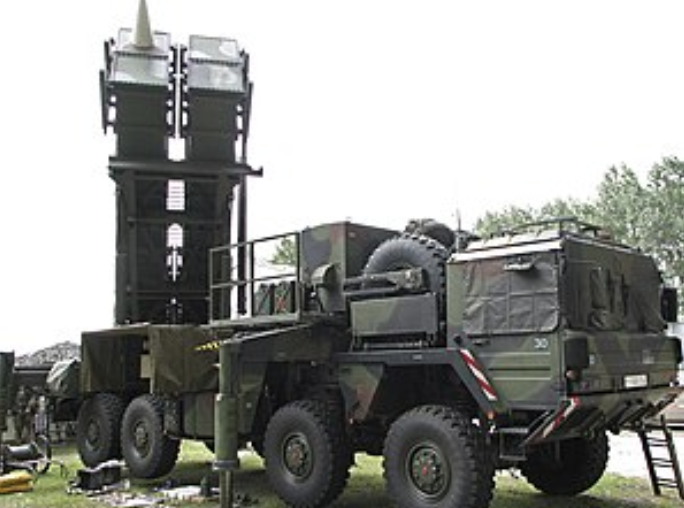
Air defense radar are used as early warning devices because they can detect approaching enemy aircraft or missiles at great distances. In the case of an attack, early detection of the enemy is vital for a successful defense. Anti-aircraft defenses in the form of anti-aircraft artillery (abbreviated to AAA), missiles, or fighter planes must be brought to a high degree of readiness in time to repel an attack. Range and bearing information, provided by air defense radar, are used to initially position a fire-control tracking radar on a target.
Another function of the air defense radar is guiding combat air patrol (CAP) aircraft to a position suitable to intercept enemy aircraft. In the case of aircraft control, the guidance information is obtained by the radar operator and passed to the aircraft by either voice radio or a computer link to the aircraft.
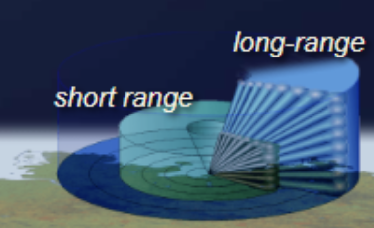
Major air defense radar applications are:
Battlefield radar usually have a shorter range and are highly specialized for a particular task. However, with new technology, multifunction radar is becoming more common even on the battlefield. Navy ships have reduced the number of specialized radar antennas in favor of multifunction radar in recent years.
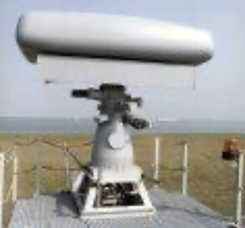
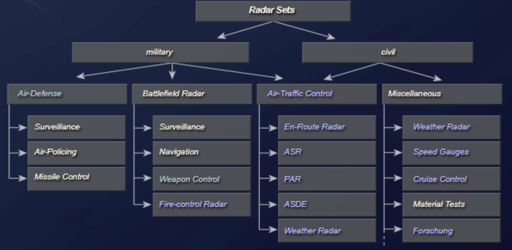
Active array multifunction radar (MFRs) enable modern weapon systems to cope with saturation attacks of very small radar cross-section missiles in a concentrated jamming environment. Such MFRs have to provide a large number of fire-control channels, simultaneous tracking of both hostile and defending missiles, and mid-course guidance commands.
The active phased-array antenna comprises flat sensor panels consisting of arrays of GaAs modules transmitting variable pulse patterns and building up a detailed picture of the surveillance area. A typical fixed array configuration system could consist of about 2,000 elements per panel, with four fixed panels. Each array panel can cover 90 degrees in both elevation and azimuth to provide complete hemispherical coverage.
Operational functions of a multi-target tracking radar (MTTR) include:
A mortar locating radar provides quick identification to pinpoint enemy mortar positions in map coordinates, enabling artillery units to launch counterattacks. The system electronically scans the horizon over a given sector several times a second, intercepting and automatically tracking hostile projectiles, then computing back along the trajectory to the origin. The coordinates and altitude of the weapons site are then presented to the operator.
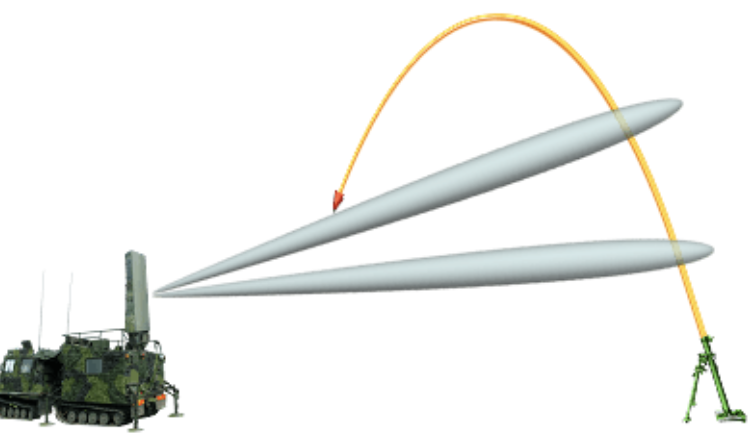
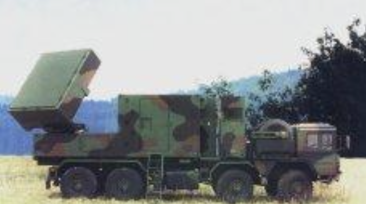
Air traffic control radar (ATC radar) is the umbrella term for all radar devices used to secure and monitor civil and military air traffic in air traffic management (ATM). They are usually fixed radar systems that have a high degree of specialization. Common applications of air traffic control radar include:
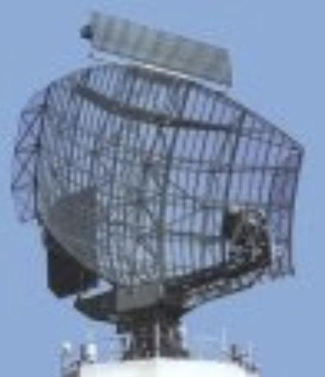
En-route radar monitor the air traffic outside the special airfield areas. En-route radar systems usually operate in the NATO D-band. These radar sets initially detect and determine the position, course, and speed of air targets in a relatively large area up to 250 nm. En-route radar are primary surveillance radar (PSR) that are coupled to a secondary surveillance radar (SSR).
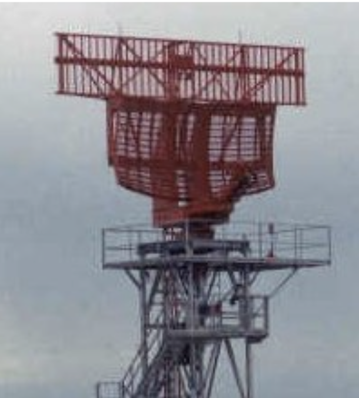
Airport surveillance radar (ASR) is an approach control radar used to detect and display an aircraft position in the terminal area. These radar sets usually operate in E-band and are capable of reliably detecting and tracking aircraft at altitudes below 25,000 feet (7,620 meters) and within 40 to 60 nautical miles (75 to 110 km) of their airport. The antennas of ASR rotate faster, at 12 to 15 revolutions per minute, to ensure the required data renewal rate of up to 5 seconds. Modern ASR have an additional weather channel and can warn users of concerning weather conditions.
The ground-controlled approach is a control mode in which an aircraft is able to land in bad weather conditions. The pilot is guided by ground control using precision approach radar (PAR). The guidance information is obtained by the radar operator and passed to the aircraft by either voice radio or a computer link to the aircraft. These radar sets usually operate in I-band.
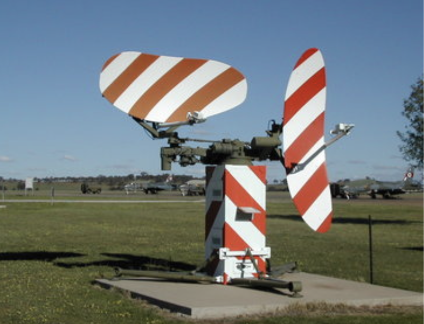
The horizontal antenna sweeps left and right and provides distance and azimuth. The vertical antenna sweeps up and down and determines the height using the elevation angle of the antenna and the distance of the target.
The approach controller sees a 3D representation of the aircraft position, which is composed of two pictures, a planar view and a vertical cut view. The controller compares the aircraft position and height to those required and provides feedback to the flight crew at short time intervals.
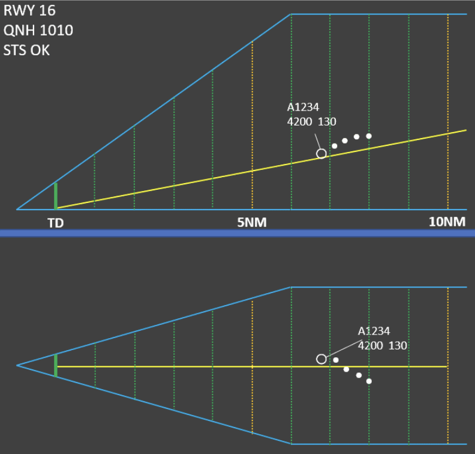
The surface movement radar (SMR) scans the airport surface to locate the positions of aircraft and ground vehicles and displays them for air traffic controllers in bad weather. Surface movement radar operate in I- to K-band and use an extremely short pulse width to provide an acceptable range resolution. The range is limited to a few kilometers, and the antenna rotation speed is 60 revolutions per minute.
Weather radar is very important for air traffic management. There are weather radar specially designed for air traffic safety.
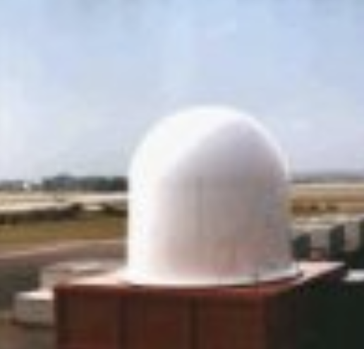
Check your understanding. Five quick questions on radar applications, auto-scored, with your answers saved on this device.